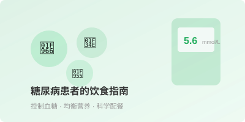
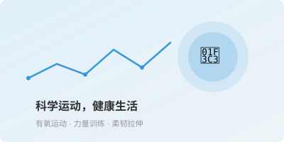
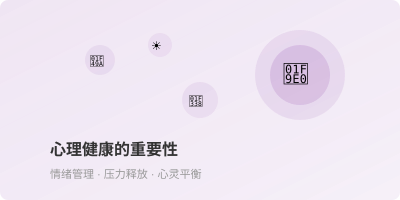
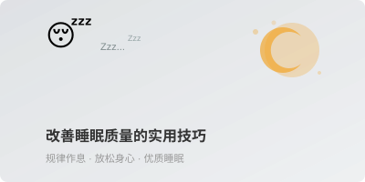
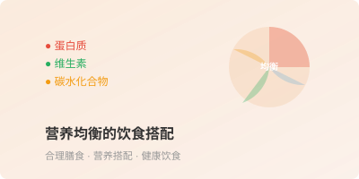

高血压是最常见的慢性病之一，也是心脑血管病最主要的危险因素。本文介绍了高血压的预防措施和日常控制方法。

合理的饮食对糖尿病患者至关重要。本文详细介绍了糖尿病患者的饮食原则和实用食谱建议。

适量的运动有助于保持健康体重、降低慢性病风险。本文介绍了不同年龄段的运动建议和注意事项。

心理健康与身体健康同样重要。本文探讨了如何保持良好的心理状态和应对压力的方法。

良好的睡眠是健康的基础。本文提供了改善睡眠质量的实用建议和常见睡眠问题的解决方法。

均衡的营养摄入对维持健康至关重要。本文介绍了如何合理搭配各类营养素，保持健康饮食。